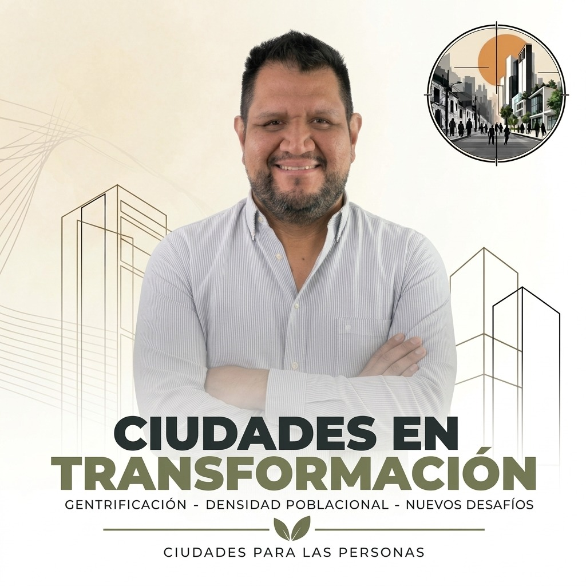

Juan Carlos Avelar Tuchán es arquitecto urbanista, egresado de la Universidad Mariano Gálvez de Guatemala, con una Maestría en Diseño Arquitectónico y Urbanismo por la University of Notre Dame, Estados Unidos.
Cuenta con experiencia profesional en Guatemala y Costa Rica, participando en el desarrollo de proyectos residenciales, de uso mixto, recreativos, académicos y urbanos.
Su trayectoria incluye cargos de dirección y coordinación arquitectónica, destacando su desempeño como Director de Arquitectura y Diseño en Costa Elena, Costa Rica, donde gestionó el diseño arquitectónico, los planos constructivos y la coordinación de ingenierías y especialidades.
Anteriormente se desempeñó como Town Architect en Las Catalinas, Costa Rica, formando parte del Comité de Revisión de Arquitectura y coordinando proyectos residenciales, de uso mixto y urbanos.
University of Notre Dame, Notre Dame, Indiana, Estados Unidos — 2016.
Especialización en Control Ambiental.
Universidad Mariano Gálvez, Ciudad de Guatemala, Guatemala — 2010.
08/2022 – 03/2026
Costa Elena, Playa Jobo, Costa Rica.
01/2021 – 08/2022
Orotina, Costa Rica.
06/2016 – 09/2020
Las Catalinas, Playa Danta, Costa Rica.
01/2011 – 07/2014
Estudio Urbano, Ciudad de Guatemala, Guatemala.
Su experiencia profesional comprende el desarrollo y coordinación de proyectos de diferentes escalas, principalmente en los ámbitos residencial, de uso mixto y urbano.
Su trayectoria profesional se ha desarrollado principalmente entre Guatemala y Costa Rica, participando en proyectos residenciales, de uso mixto, recreativos, académicos y urbanos.
Ha desarrollado actividades profesionales en Costa Elena, Playa Jobo; Las Catalinas, Playa Danta; y Orotina, Alajuela.
Su experiencia incluye trabajo en Estudio Urbano, Ciudad de Guatemala, así como colaboraciones con firmas de diseño e inmobiliarias en Guatemala.